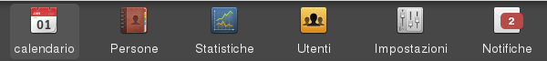

Il calendario¶
Il calendario è il contenitore dei turni, essi vengono rappresentati disposti su sette colonne in ordine cronologico.
Nota
Se due turni inziano contemporaneamente verrannò ordinato secondo la priorità del tipo di turno
GeT può gestire più calendari contemporaneamente riconoscibili dalla medesima icona nel menu principale.
Visualizzazione del calendario¶
La visualizzazione del calendario varia secondo il seguente schema:
- Utente non loggato
- Utente semplice
- Membro dello staff
Calendario utente non loggato¶

Se si accede al calendario senza prima aver effettuato il login non saranno visibili i nomi delle persone segnate. Saranno però già riconoscibili i turni coperti e non in base al loro colore (verde coperto, rosso non coperto).
Calendario utente semplice¶

Quando il calendario è visualizzato da un utente semplice dopo aver effettuato il login appariranno i nomi delle persone già segnate e tutti i turni diventeranno clickabili.

Facendo click su un turno è possibili modificare la propria disponibilità. Se la modifica avviene entro i tempi preimpostati verrà mostrata una finestra di dialogo che permetterà all’utente di selezionare la mansione che vuole ricoprire. Se il click avviene su un turno per cui l’utente si è già reso disponbile egli sarà in grado di cancellarsi. In entrambi i casi verrà inviata una notifica all’utente dello staff predisposto.
Nota
I limiti temporali entro cui è possibile segnarsi o cancellarsi da un turno vengono impostati all’ interno di un file di configurazione predefinito
Nota
La mansioni che saranno mostrate all’utente per potersi segnare vengono selezionate dal software in modo che non vadano in conflitto con i requisiti pre-impostati (se ad esempio è necessario massimo una autista e un utente si è già segnato nessun altro potrà farlo)
Calendario per lo staff¶

Quando è stato effettuato il login come menbro dello staff la visualizzazione del calendario risulta completa di tutte le informazioni sia sulle persone disponibili sia dei requisiti del singolo turno.
All’interno del turno appaiono tutte le mansioni e sulla destra sono indicati i requisiti numerici all’interno di un badge colorato. Esso può essere dei seguenti colori:
- verde: requisito soddisfatto
- rosso: requisito non soddisfatto
- blu: requisito sufficiente
- grigio: requisito non necessario
Facendo click sul badge si aprirà la pagina di ricerca delle persone per quella mansione.
Nota
se un requisito è indicato come extra apparirà un asterisco alla sua sinistra
Nota
se un requisito è indicato come nascosto non risulterà clickabile e sarà visibile solo allo staff